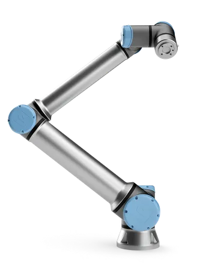

ROBÓTICA INDUSTRIAL
O robô industrial automatiza tarefas repetitivas com precisão, aumentando a eficiência, reduzindo erros e otimizando processos na linha de produção
O robô industrial executa operações automatizadas com alta precisão, integrando-se a sistemas cibernéticos para otimização de processos e redução de variabilidade
O robô industrial pode ser aplicado em várias atividades industriais
